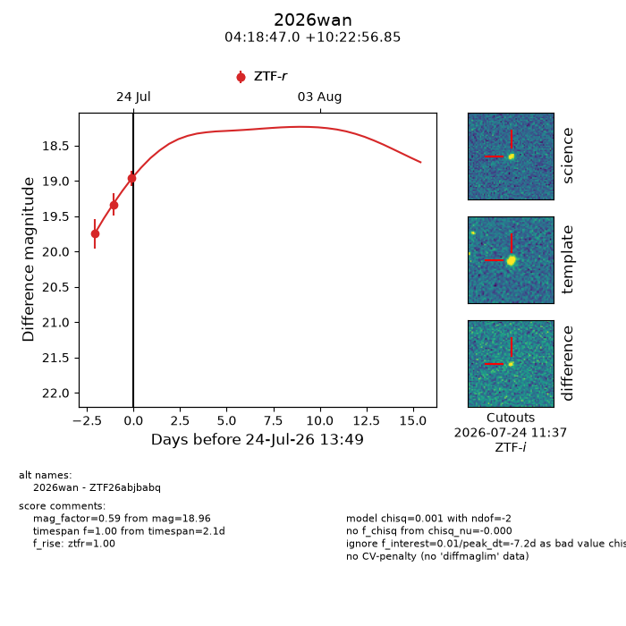
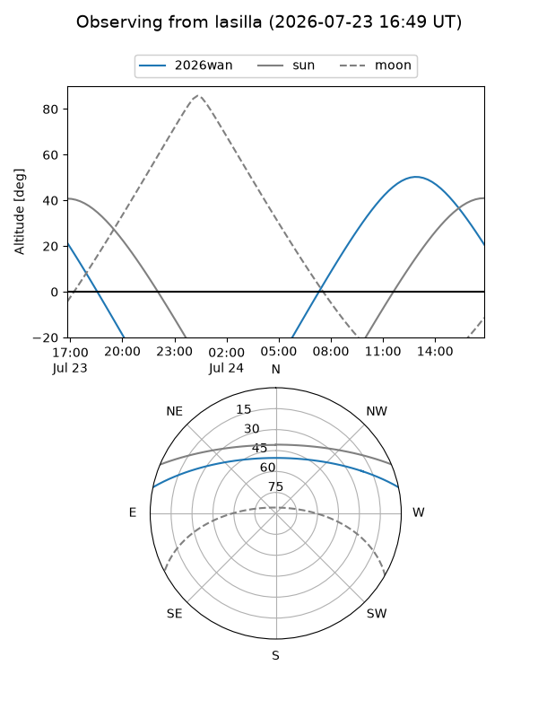
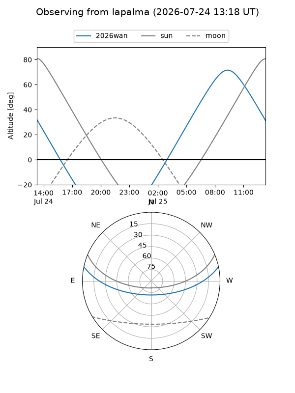
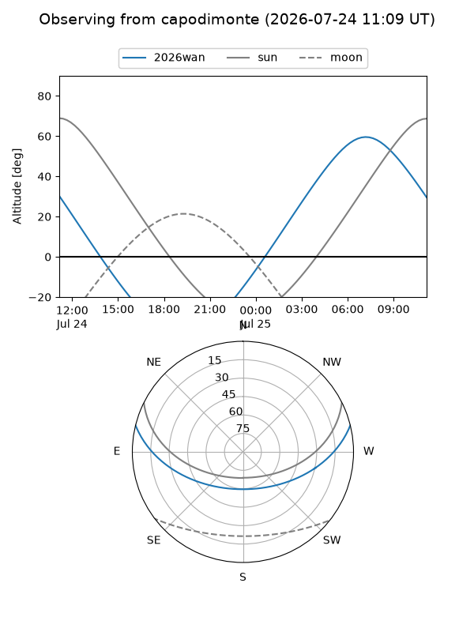
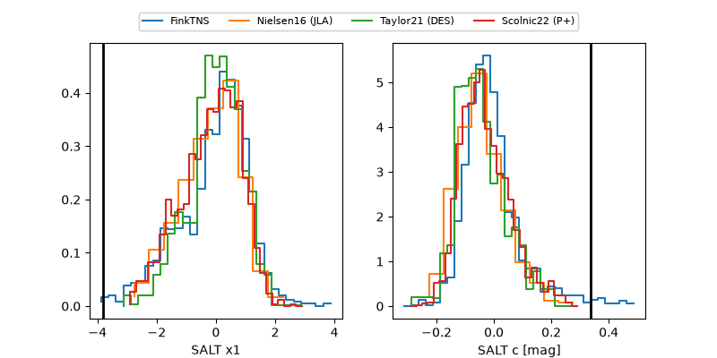

2026wan
Target 2026wan at 2026-07-24 13:51
Aliases and brokers:
FINK-ZTF: ztf.fink-portal.org/ZTF26abjbabq
Lasair-ZTF: lasair-ztf.lsst.ac.uk/objects/ZTF26abjbabq
ALeRCE-ZTF: alerce.online/object/ZTF26abjbabq
YSE-PZ: ziggy.ucolick.org/yse/transient_detail/2026wan
TNS name: wis-tns.org/object/2026wan
Direct TNS query: direct search
alt names
ZTF26abjbabq (ztf,fink_ztf)
2026wan (tns,yse)
Coordinates:
equatorial (ra, dec) = 64.6957,+10.38246
equatorial (HMS+DMS) = 04:18:46.98,+10:22:56.85
galactic (l, b) = (183.4330,-27.30665)
Flags:
TNS type: nan
peak dt: -7.2
Photometry:
last ztfr=18.96
3 ztfr detections
Lightcurve

Visibility



Additional plots
